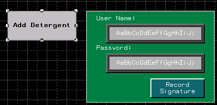
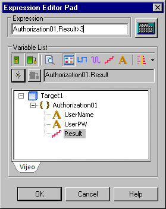
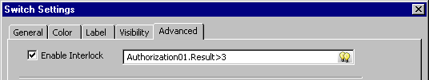
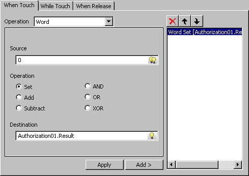
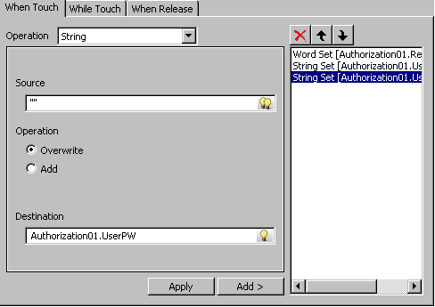

|
|
|
|
|
|
|
|
Vijeo Designer enables you to protect a critical operation or process and make it accessible to authorized personnel only. Typical cases where the authorization feature can be useful are in changing recipes or overriding a normal value for an operation. The authorization feature obtains operator's information before any action or operation can be performed. The operator must provide valid user name and password and must have the required security level.
You can set up the authorization feature using either of these methods:
The Authorization Toolchest part. For more information, see Example of How to Set Up an Authorization Session.
The Validate User system script method. For more information, see Section 18.9.1.5, System Method: Sys.validateUser.
To set up the authorization feature:
Click the Toolchest icon to open the Toolchest window and select the Security folder.
Drag and drop the Authorization Toolchest part onto the panel.
Do one of the following:
Draw a Switch (example: for changing recipes). The Switch Settings dialog box opens.
Draw a Numeric Display (example: for overriding a normal value for an operation). The Numeric Display dialog box opens.
In the Advanced tab, select Enable Interlock
In the Interlock Variable field, assign the desired security level to the authorization result integer variable (example, Authorization01.Result > 50) .
For information on how to reset an authorization session, see Example of How to Reset an Authorization Session.
For more information on setting up user names, passwords, and security levels in the Security node, see Section 4.8, Setting Up Security Protection for Targets and Projects.
In this example you want to set up an authorization session to the Add Detergent operation using a switch, such that operators with security level greater than 3 can run this operation. The following steps describe how to achieve this:
Draw a switch on the panel (Add Detergent), the Switch Settings dialog box opens. Define the general settings for this switch. For information on how to create switches, see Section 9.2, Creating Switches.

In the Advanced tab, select Enable Interlock and open the Interlock Variable List.

Select the Authorization01.Result integer variable and enter the desired expression with the specified security level. This expression also displays in Interlock Variable field.

At run time, the following sequence of events occur:
The Add Detergent switch is inactive and hash-marked.
To activate the switch, the operator must enter a valid user name and password and press the Record Signature button.
The operator's security level is written into Authorization.Result integer variable.
If the operator's security level is greater than 3, the Add Detergent switch becomes active and accessible to the operator.
This example illustrates how to reset an authorization session using a switch.
Draw a switch on the panel. The Switch Settings dialog box opens. For information on how to create switches, see Section 9.2, Creating Switches.
In the General tab, select one of the When Touch, While Touch, or When Release tabs.
In the Operation list, select Word.
In the Destination field, choose Authorization01.Result integer variable.
In the Source field, enter '0' and click Add. Ensure that Set is selected.

Select String as the Operation.
In the Destination field, choose Authorization01.UserName string variable.
Enter empty string "" in the Source field and click Add. Ensure that Overwrite is selected.
Repeat steps 6 to 8 for Authorization01.UserPW string variable.

At run time, when the reset switch is pressed, the above values are written into their corresponding variables. This process resets the authorization session.